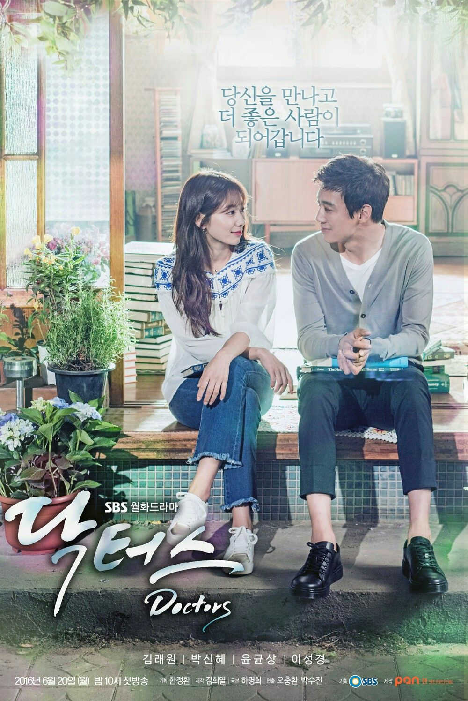

Miss The Dragon
Una joven sirvienta salva una serpiente en
nombre de su joven amante en un encuentro casual. Sin embargo,
la serpiente resulta ser un dragón milenario llamado Yu Chu Long Yan,
que ahora quiere casarse con ella para devolverle su bondad.
W dos mundos
Oh Yeon Joo es una doctora residente de segundo año. Su padre, un famoso
creador de cómics, desaparece súbitamente. Luego ella es secuestrada por
un hombre extraño, que la transporta a una nueva dimensión
Doctors
Yoo Hye-jung era una chica testaruda en la escuela secundaria
con una personalidad espinosa y gángster. Debido a sus muchas cicatrices de la
infancia, mantiene su corazón cerrado hacia otras personas. Sin embargo,
ella cambia después de conocer a su mentor Hong Ji-hong
